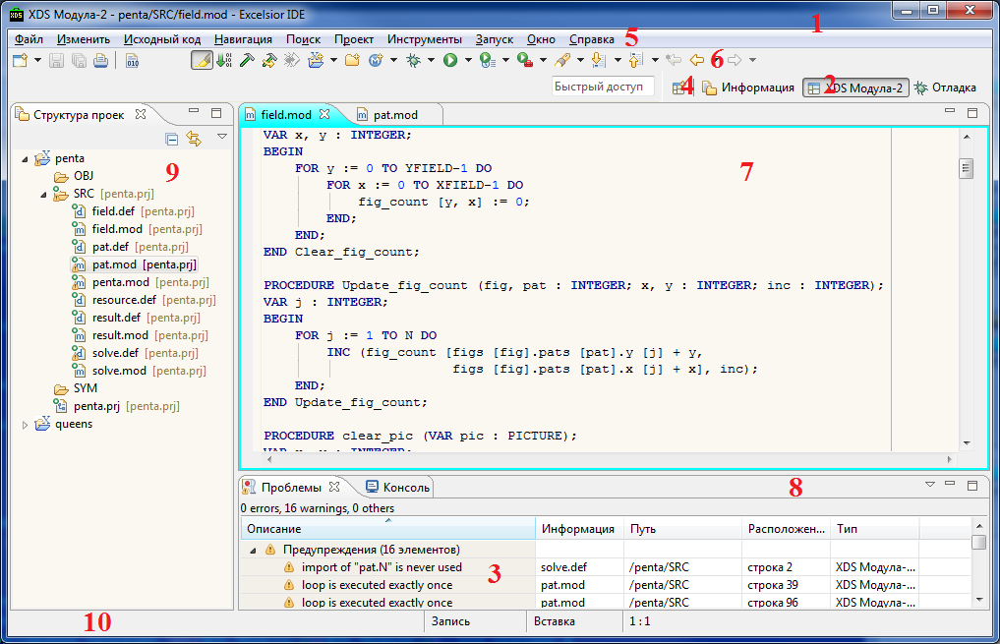
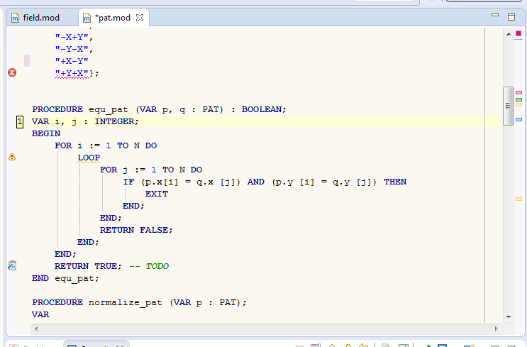
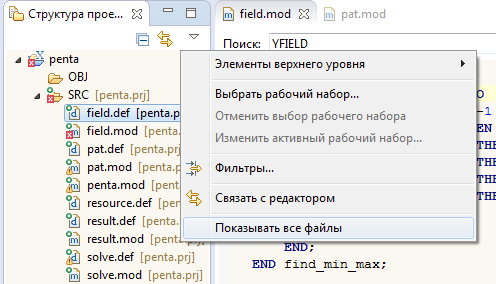
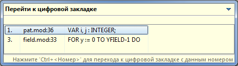
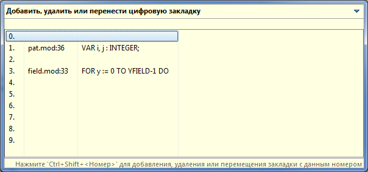
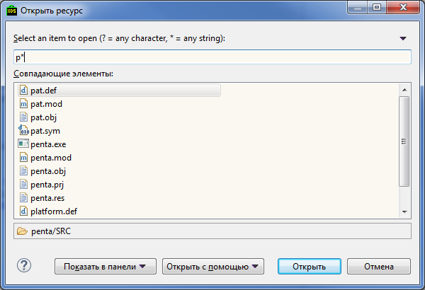
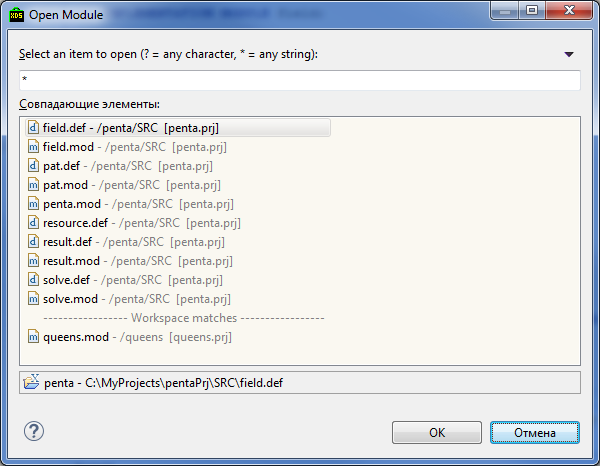
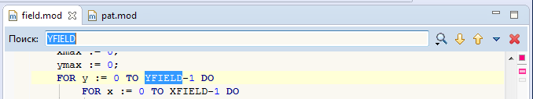
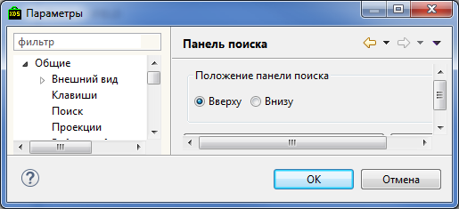

Основные элементы пользовательского интерфейса представлены на приведенном ниже рисунке:

Основные элементы среды включают в себя:
Редакторы и панели являются дочерними окнами рабочего стола. Дочерние окна могут быть активными или неактивными, но только одно дочернее окно может быть активным в данный момент времени. Активным является то окно, у которого подсвечен заголовок. К содержимому активного окна будут применяться общие операции вырезки, копированию и вставки. Также активное окно обуславливает содержимое строки состояния рабочего стола. Если закладка редактора белая, то это показывает, что данный редактор неактивен, однако панели могут отображать информацию, полученную из редактора, бывшего активным последним. При двойном нажатии на закладку дочернего окна оно разворачивается на полный размер окна Eclipse. Повторное двойное нажатие свернет окно до первоначального размера.
По дочерним окнам рабочего стола можно перемещаться циклически, используя комбинацию клавиш Ctrl + ~.
Остановимся подробнее на описании некоторых основных элементов.
Рабочий Стол (Workbench) это главное окно интегрированной среды, которое предоставляет инфраструктуру для управления ресурсами рабочей области и навигации по ним.
Окно рабочего стола содержит одну или несколько проекций, которые управляют взаимным расположением редакторов и панелей наиболее удобным для выполнения определённых задач.
Проекции (Perspective) определяет набор и взаимное расположение панелей, редакторов и других элементов интерфейса, которые видны пользователю. Проекция может содержать произвольное количество панелей и редакторов. Количество самих проекций так же ничем не ограничено, но только одна из них видима в данный момент. Для того чтобы получить полный список проекций в главном меню необходимо выбрать Окно > Открыть проекцию > Прочие....
Каждая проекция может иметь различные наборы панелей, но все проекции используют один и тот же набор редакторов. Т.е. при переключении между проекциями количество и взаимное расположение редакторов не меняется.
Основное назначение проекции предоставить для выполняемой в данный момент задачи оптимальный набор панелей, так чтобы под рукой были только необходимые инструментальные средства.
Для текущей проекции можно восстановить начальное расположение окон, выбрав в главном меню Окно > Сброс проекции.
Редактор (Editor) представляет собой инструмент для просмотра и редактирования файлов проекта. Для каждого файла создается свой экземпляр редактора. Верхняя часть окна редактора представляет собой интерфейс с закладками для быстрого переключения между файлами.
Изменения, выполненные в процессе редактирования, не записываются в открытый файл, до тех пор, пока не будет вызвана команда сохранения. В редакторе, созданном для одного файла, невозможно открыть какой-либо другой файл.
Имя редактируемого файла отображается в закладке. Если в левой части закладки появляется символ звездочки *, то это означает, что редактор содержит несохраненные изменения. Если вы попытаетесь в таком случае закрыть редактор или выйти из интегрированной среды, то будет выведено напоминание о наличие несохраненных изменений.

В левой части редактора располагается вертикальная планка, называемая планка маркировки. В ней отображаются иконки маркеров, указывающие на ошибки и предупреждения компиляции, наличие закладки и т.д. При наведении курсора на маркер появляется контекстная информация о данном маркере. Вызвав контекстное меню напротив нужной строки документа на планке маркировки, можно добавлять или удалять закладки и задачи, соответственно выбрав пункты Добавить/Удалить закладку, Добавить/Удалить задачу.
Справа от планки маркеров располагается вертикальное поле, в котором могут отображаться номера строк и маркеры цифровых закладок. Ширина этого поля меняется динамически в зависимости от отображаемой в нем информации.
В правой части редактора расположена линейка обзора, содержащая цветные маркеры. Они указывают на те места в файле, в которых находятся предупреждения, ошибки, закладки и результаты поиска. Линейка обзора полезна при навигации по файлам, которые не вмещаются в окно редактора полностью. При наведении курсора на маркер отображается подсказка. При нажатии на маркер осуществляется переход к той части кода, на которую он указывает. На Рисунке видны четыре типа маркеров: желтые – предупреждения, красные – ошибки, синие – задачи, зеленые – закладки.
Вы можете перемещаться по редакторам рабочего стола циклически, используя комбинацию клавиш Ctrl + Tab.
Панели (Views) предназначены для предоставления информации об объекте, с которым пользователь работает в данный момент, и изменении его свойств. В отличие от редакторов панели не связаны с каким-либо конкретным ресурсом. Одина и та же панель в разные моменты времени может отобрать информацию о разных объектах. Панели могут быть использованы для отображения содержимого активного в данный момент редактора, элемента, выбранного в другой панели, а также данных, полученных любым другим путем (таких, как, например, сообщения компилятора).
В отличие от редакторов, изменения, сделанные пользователем при помощи панели, как правило, немедленно сохраняются или переносятся в соответствующие ресурсы. Например, в панели Структура проекта отсутствует команда Сохранить (Save) или подобная ей – такие действия пользователя, как копирование или переименование файлов, немедленно производятся с соответствующими ресурсами. Данное соглашение не является, строго говоря, обязательным. Некоторые панели могут требовать явного сохранения пользовательских изменений. Однако такие поведение противоречит принятым соглашениям о пользовательском интерфейсе платформы Eclipse.
Любая из панелей интегрированной среды может быть закрыта и в любой момент открыта снова через главное меню: Окно > Показать панель > Прочие....
Панель Структура проекта отображает древовидную структуру проектов текущей рабочей области. Даная панель позволяет:
Файлы, которые выбраны в панели Структура Проекта непосредственно влияют на то, что отображается в остальных панелях интегрированной среды.
Щелчок правой кнопки мыши на любом элементе в панели Структура Проекта открывает контекстное меню, которое позволяет управлять данным элементов и его свойствами.
Для Модула-2 проектов, по умолчанию, отображаются только исходные файлы с Модула-2 кодом и пакетные файлы отладчика – файлы с расширениями *.mod, *.def, *.prj, *.pkt, *.res и *.ldp. Все остальные файлы, находящиеся в проекте, фильтруются и не отображаются. Для того чтобы отображались все файлы, находящиеся в директории проекта, необходимо в панели инструментов окна выбрать пункт Показывать все файлы.

Модула-2 файлы, необходимые для компиляции проекта, помечаются визуально зеленой точкой в правом верхнем углу на значке иконки файла. Кроме того, после имени таких файлов в квадрантных скобках указывается имя проектного файла или главного модуля, используемых для компиляции проекта.
Модула-2 файлы, которые необходимы для компиляции, но находятся не в директории проекта, помещаются в виртуальную папку с именем Внешние Зависимости.
Если интеграция с КСП проедена в полном объеме, то в виртуальной папке Библиотека Системы Программирования будут отображаться модули определений стандартной библиотеки КСП.
При задании различных параметров для работы в среде используются мастера настройки.
Типичный мастер настройки выглядит следующим образом:
В шапке указано название мастера настройки. А ниже можно видеть информационную строку, в которой показываются подсказки и предупреждения. В примере можно видеть предупреждение о необходимости ввода имени проекта при создании проекта уже существующего Модула-2 кода.
В нижней части мастера настройки располагаются кнопки Готово и Отменить. По нажатию кнопки Готово сохраняются и применяются все сделанные изменения; вторая кнопка закрывает мастер без сохранения изменений.
Для быстрого перемещения по коду в редакторах можно использовать цифровые закладки.
Чтобы установить закладку на текущей строке необходимо нажать комбинацию Ctrl + Shift + <Number>, где <Number> – любая цифра от 0 до 9. Таким образом можно установить 10 закладок. Если при установке закладки использовать уже занятую цифру, то закладка будет переназначена. Повторное нажатие Ctrl + Shift + <Number> на той же строке удаляет закладку.
Для перехода на установленную закладку необходимо нажать Ctrl + <Number>. Посмотреть все установленные закладки и перейти к нужной можно, нажав комбинацию Ctrl + =.

Выбрав стрелками необходимую закладку и нажав Enter можно осуществить переход к закладке (при необходимости, нужный файл будет открыт в новом окне редактора).
Переназначить или удалить конкретную закладку можно, используя комбинацию Ctrl + Shift + =.

Очистить список всех закладок можно, выбрав в главном меню пункт Навигация > Цифровые закладки > Удалить все цифровые закладки.
Быстро открыть любой файл любого проекта рабочей области можно, используя комбинацию Ctrl + Shift + R.

В диалоге показываются все ресурсы рабочей области (включая те, отображение которых может быть выключено в панели Структура проекта). Вверху списка показываются последние открываемые ресурсы (убрать из данного списка их можно, выбрав в контекстном меню пункт Удалить из хронологии). Строка в верхней части диалога позволяет быстро отфильтровать ресурсы по названию. Можно использовать подстановочные шаблоны: * означает любое количество символов (строка) или их отсутствие, ? означает любой символ или его отсутствие.
Для выбора модуля можно использовать комбинацию Ctrl + M.

Для поиска текста в файле служит Панель быстрого поиска. Вызвать ее можно используя в текстовом редакторе комбинацию Ctrl + F.
В верхней части окна редактора появляется поле ввода текста, который необходимо найти. Имеется возможность открывать панель поиска не вверху редактора, а внизу, в зависимости от настроек.

По умолчанию панель быстрого поиска открывается по нажатию Ctrl+Alt+F.
Чтобы закрыть панель, нажмите Esc.
На данный момент панель поддерживает только поиск, для выполнения поиска и замены нужно использовать стандартный диалог Найти и заменить, который сейчас вызывается комбинацией Ctrl + Alt + F (или через главное меню Eclipse).
Кроме того, в некоторых случаях, например в редакторе .xml файлов, панель быстрого поиска не работает - в таких случаях вместо нее показывается стандартный диалог Найти и заменить.
После набора текста в панели, для его поиска используются клавиши Up/Donwn или Shift+Enter/Enter.
Если фокус находится на панели, то Ctrl + Down открывает историю поиска. Shift+Down сразу подставляет в строку поиска следующий пункт из истории поиска. Комбинация, которая используется для открытия панели, открывает в ней меню настроек поиска.
Так же, история поиска, поиск следующего и предыдущего вхождения искомой строки, меню настроек поиска и закрытие панели могут быть выполнены мышью с использованием соответствующих кнопок расположенных на панели справа.
Панель быстрого поиска поддерживает все режимы поиска стандартного диалога, Найти и заменить, настраивать их можно в меню настроек поиска:

Кроме того, из этого меню можно очиситить историю поиска и перейти в диалог настроек панели.
Помимо панели быстрого поиска, поддерживается так же быстрый поиск слова без открытия панели. Для этого достаточно встать курсором на слово и нажать Ctrl+Up или Ctrl+Down. По умолчанию эти же комбинации клавиш используются для прокрутки экрана и при их нажатии возникает конфликт, который можно разрешить, отменив для одного из действий эти комбинации в диалоге Параметры на страницеина странице Общие > Клавиши.
ВНИМАНИЕ: Если для быстрого поиска назначаются новые клавиши, то нужно убедиться, что в поле Когда выбран пункт В окнах.
Параметры настройки панели быстрого поиска размещены в диалоге Параметры на странице Общие > Редакторы > Текстовые редакторы > Панель поиска.

Здесь можно выбрать верхнее или нижнее расположение панели быстрого поиска в окне редактора.